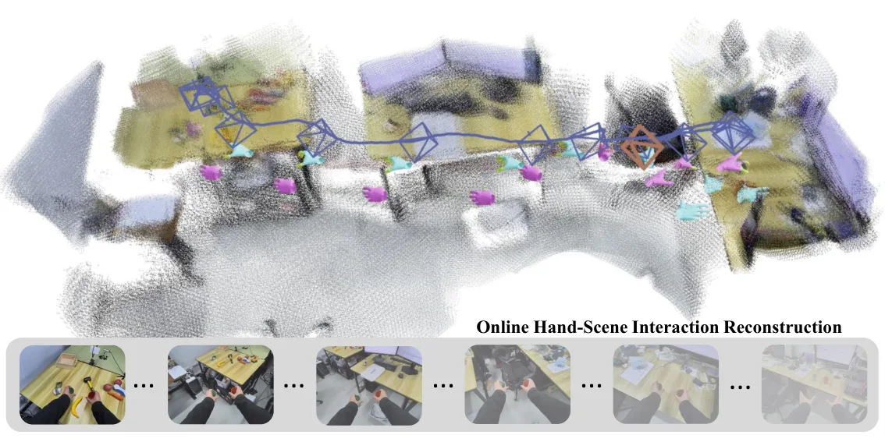
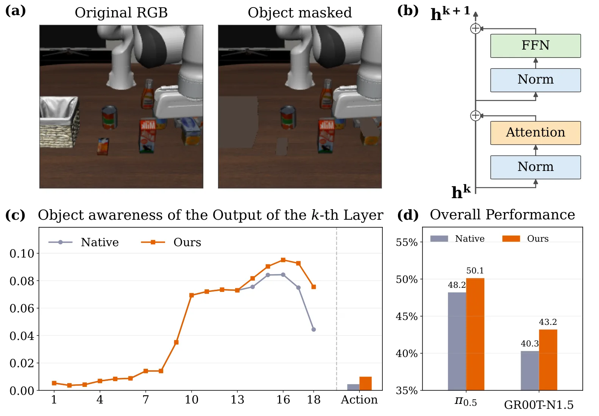
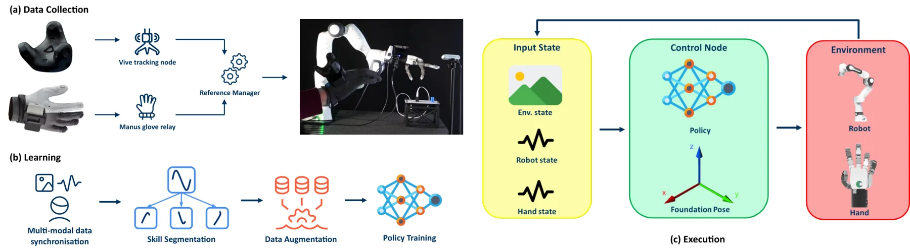
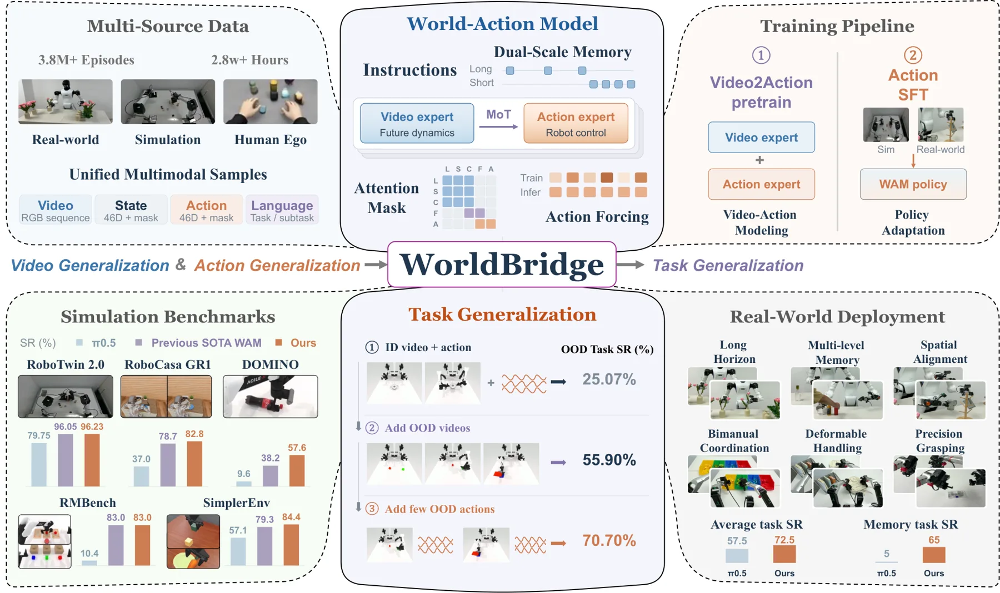
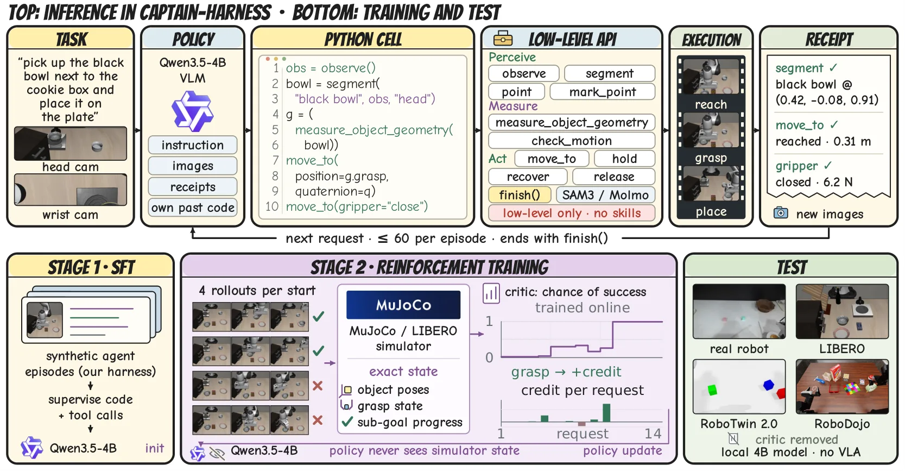
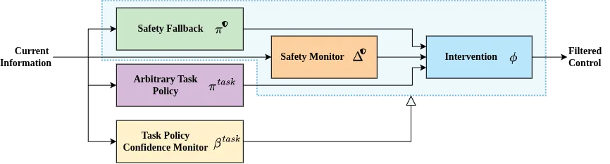

新论文 · 日期 2026-11-02 · score 8 · S层 · 3D/4D Spatial Perception · cs.CV
内容级别：完整单篇海报
作者：Mingzhi Pei, Zhangchen Ye, Ruoqu Chen, Liu Cao, Mengdi Xu
评分 8/10
在线4D重建手-场景交互CUT3RMANO接触估计共享世界坐标
一句话工作总结：在 CUT3R 递推状态上注入 WiLoR 手部先验与局部场景上下文，再用 778 个 MANO 顶点查询场景特征预测接触并回灌手部 token。ARCTIC 世界系 W-MPJPE 108.80 mm（StableHand 124.59），H2O 深度 Abs Rel 0.027、ATE 2.573 mm，但因果推理下加速度误差与双手相对位置误差明显更差。
从第一视角单目视频中同时恢复相机运动、持久场景几何、世界坐标下的双手 MANO 参数以及逐顶点手-场景接触，是一个需要共享坐标系与尺度的联合估计问题。现有方法要么只给相机系手部，要么给世界系手部轨迹但不重建场景，拼成完整 4D 结果通常依赖逐序列的离线优化。EgoHSI3R 以 CUT3R 的递推状态为场景底座，把场景条件化的手部 prompt 注入递推循环，并用 MANO 顶点查询局部场景特征预测接触，从而在每帧…
Egocentric videos offer an abundant source of hand-scene interactions for embodied learning, which requires recovering hands, camera, and scene consistently in a shared 3D world. Existing methods focus on eith…

新论文 · 日期 2026-11-02 · score 9 · A层 · Robotic Foundation Models / VLA · cs.RO, cs.AI
内容级别：半海报
作者：Guangyu Zhao, Yongchang Zhang, Haoxuan Ru, Kaichen He, Haoran Wen, Kun Zhan, Zeyu Zhang, Yin Li, Yiwu Zhong
评分 7/10
VLA免训练推理残差流本体感觉视觉 groundingEMA
一句话工作总结：不改权重、不改架构，只在后 1/3 Transformer 层对残差更新做 EMA，并用末端执行器方向连续性、速度、jerk、旋转变化调节 β。SimplerEnv 上 GR00T-N1.5 41.0→46.3、OpenVLA 30.3→36.0；LIBERO-PRO 上 π0.5 48.2→50.1；真机梨到碗 42.5→47.5（17/40→19/40）。
VLA 把语言指令与视觉观测映射为动作，但作者用“遮住目标物体”的探针发现：动作表征在中间层还能保留任务相关视觉证据，到靠近动作输出的后层反而衰减。STAR 是一个免训练推理方法：对后层残差更新做指数滑动平均，让后面的动作表征继承前面层的物体感知更新方向；再用近期本体感觉状态调节混合强度，执行动态变化快时更保守。在 LIBERO-PRO、SimplerEnv 与真机上，STAR 让冻结 VLA 的平均成功率提升约…
Vision-language-action models (VLAs) map language instructions and visual observations to robot actions, showing strong capabilities across robotic manipulation tasks. However, in our probing experiment, we fi…

新论文 · 日期 2026-11-02 · score 8 · A层 · Robotic Foundation Models / VLA · cs.RO, cs.AI, cs.LG, cs.SY
内容级别：半海报
作者：Ammar N. Abbas, Aayush Jain, Prashanth Viswanath, Nivesh Gadipudi, Giulia Vilone, Jim Gibbons
评分 8/10
真机消融模仿学习点云策略VLA离线指标灵巧操作
一句话工作总结：同一接触密集任务上系统消融 281 个策略：iDP3 加点云 ROI 裁剪在两个夹具上都 100% 插入，追平 3.3B 的 π0.5 而推理内存只要 1/8；67 个离线指标仅 5 个平滑度指标在 iDP3 家族内有效，不能跨家族替代真机。
模仿学习策略在物体位姿、外观与环境变化下的真实表现很难用验证损失预测。作者用五指手完成 RJ45 接头抓取与插入，对 7 个策略家族的 281 个策略做了约 1700 次真机试验，逐项改变观测/动作表征、编码器预训练、优化器与采样器。结果显示表征选择远大于调参：点云 ROI 裁剪、机器人基座系、编码器内归一化各自带来 70–100 个百分点的提升；67 个离线指标里只有 5 个平滑度类指标在单一策略家族内与插入成功…
Imitation learning policies are intended to make robotic manipulation robust to variations in object pose, appearance, and environment that challenge pre-programmed motion. However, real-world performance rema…

新论文 · 日期 2026-11-02 · score 7 · A层 · Robotic Foundation Models / VLA · cs.RO
内容级别：半海报
作者：Jun Cen, Yubo Guo, Hao Li, Liangkai Li, Yaoxu Lyu, Meng Wei, Zeqi Xiao, Sizhe Yang, Yuqiang Yang, Yifan Ye, Shanghang Zhang, Duo Zheng
评分 7/10
世界动作模型视频-动作桥任务泛化MoTaction forcing机器人预训练
一句话工作总结：把任务泛化拆成“视频覆盖”和“视频到动作桥”两件事，用 MoT 双专家加联合 flow matching 实现。RoboTwin 2.0 平均 96.23%、Clean2Random 80.9%，RoboCasa GR1 82.8%、RMBench 83.0%、DOMINO 57.6%，SimplerEnv-WidowX 84.4%；真机经编译与 CUDA Graph 优化后…
世界动作模型（WAM）同时预测未来视频与动作，但“视频泛化”和“动作泛化”各自贡献多少并不清楚。作者在 RoboTwin 2.0 上逐步增加分布外任务的视频与动作监督：只用分布内视频-动作对时 OOD 成功率 25.07%，加入 OOD 视频（无动作标签）升到 55.90%，每个任务再加 1 条动作示范升到 70.70%。据此提出 WorldBridge：视频专家与动作专家通过结构化注意力连接、联合 flow ma…
Achieving the broad task generalization of embodied models in physical environments remains a central challenge in robot learning. We study this challenge in World Action Models (WAMs) through two complementar…

新论文 · 日期 2026-11-02 · score 7 · A层 · Robotic Foundation Models / VLA · cs.RO
内容级别：半海报
作者：Yijia Fan, Xilin He, Yilei Jiang, Dongming Wu, Jiaxu Wang, Xiangyu Yue
评分 7/10
代码即策略多轮RL信用分配特权criticVLM机器人操作
一句话工作总结：不改 VLA、不用前沿模型，4B 开源 VLM 在 22 个低层原语上做 SFT+多轮 RL；特权 simulator critic 把 65% 的 advantage 集中到运动、14% 到抓取。LIBERO 55.4→73.8、LIBERO-PRO 78.5、LIBERO-Plus 66.1，零样本 SimplerEnv WidowX 83.3%，但 RoboTwin 仅…
代码即策略（CaP）让模型写程序调用机器人 API，但现有系统要么在测试时调用闭源前沿模型，要么把操作外包给预训练 VLA，小型开源 VLM 直接失败。CaPtain 给出一条完整的 SFT 加多轮 RL 后训练流水线：在只暴露 22 个低层感知/几何/受控运动原语的 harness 内，先用 GPT-6 Astra 生成的轨迹做 SFT，再用读取仿真特权物理状态的 critic 做多轮 RL，把稀疏的终局结果分摊…
Across coding, web, and tool-use tasks, language-model agents are now routinely trained with the same recipe: supervised fine-tuning (SFT) to learn the interface, then multi-turn reinforcement learning (RL) to…

新论文 · 日期 2026-11-02 · score 6 · A层 · Robust State Estimation / Uncertainty · cs.RO, cs.SY, eess.SY
内容级别：半海报
作者：Javier Borquez, Jaime F. Fisac
评分 6/10
安全滤波置信度CBFODD不确定性F1TENTH
一句话工作总结：把策略置信度 β 映射到 backup CBF 的 γ：置信高用 γ=0.55 换取圈速，置信低退到 γ=0.08 换安全。60 圈 F1TENTH 试验中，调制版在 μ=1.05 内 60/60 完成、30.2 s，在 μ=0.6 外 60/60 完成、30.8 s，而固定 γ=0.55 在 ODD 外撞 10 圈。
端到端策略在训练分布内表现良好，但离开其能力域后行为不受保证，通常会外套一个安全滤波器。滤波器只在自身假设成立的 ODD 内提供证书，且保守度通常固定：在 ODD 内过度保守会压低性能，在 ODD 外过度激进又失去余量。作者提出与滤波器无关的运行时调制：用一个策略置信度监控器选择分级滤波器家族中的成员，置信高时放松、置信低时收紧。F1TENTH 仿真中，调制滤波器在 ODD 内追平最激进的固定滤波器圈速，在 ODD…
End-to-end policies, from task-specific controllers to robot foundation models, learn complex behavior from raw observations but are not guaranteed to remain safe, so they are often wrapped in a safety filter.…